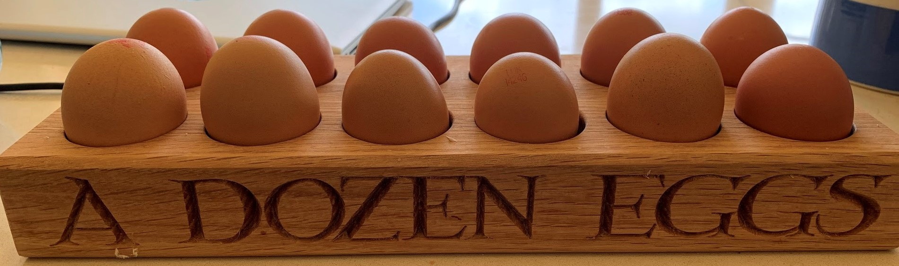
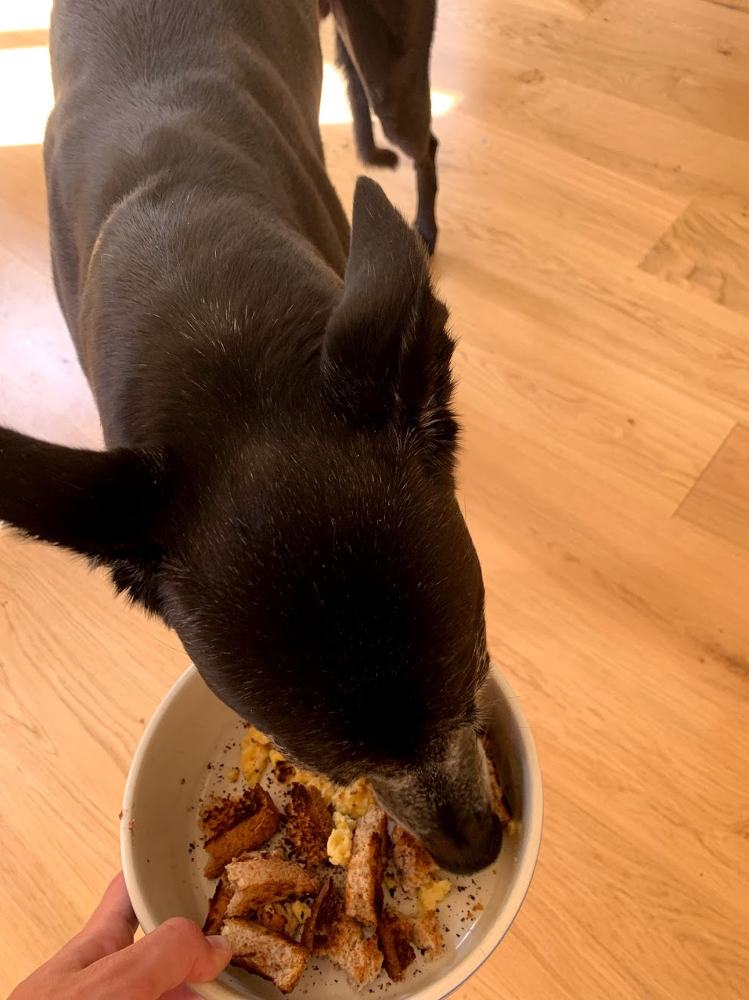
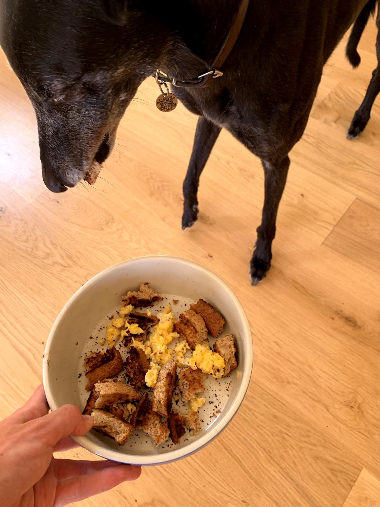
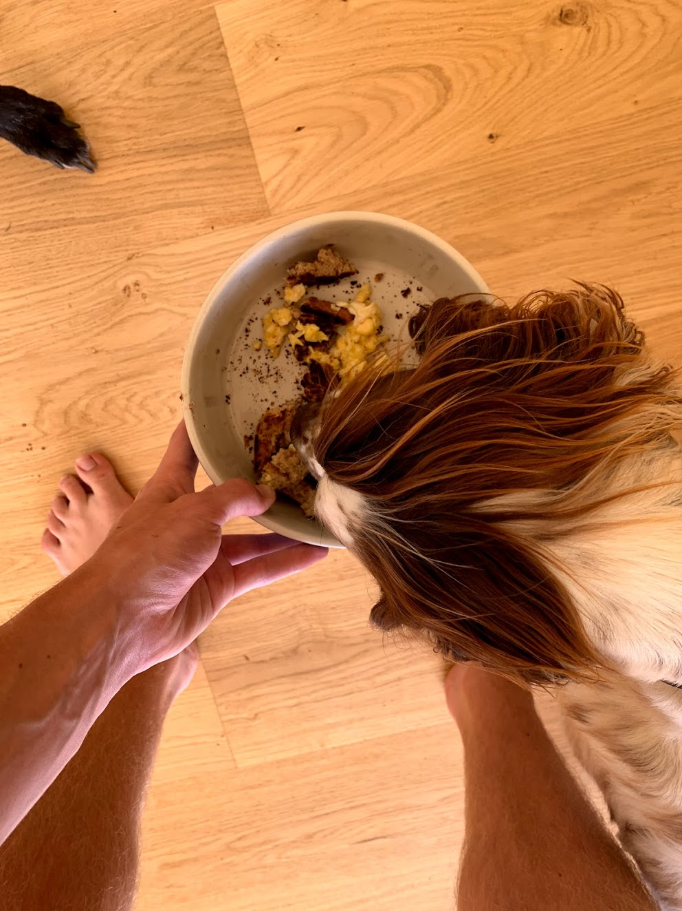

William Jackson-Nichols (me)
William Jackson-Nichols (me)
09/08/2019
The Perfect Scrambled Eggs.



After starting to read Samin Nosrat's 'Salt, Fat, Acid, Heat' I decided to explore the roles of salt, fat and acid in the cooking of scrambled eggs.
 I used five eggs (any leftovers went to the dogs), cooking with olive oil, butter, fine sea salt, coarse sea salt flakes and a lemon:
I used five eggs (any leftovers went to the dogs), cooking with olive oil, butter, fine sea salt, coarse sea salt flakes and a lemon:
- Butter
- Olive Oil
- Butter and Salt
- Butter and Lemon
- Butter, Salt and Lemon
These are my findings:
- Tasted buttery, oddly enough, but they were also silky, soft but short on flavour.
- A little watery. They had a little more flavour but not worth the trade off for the silkiness and lip-smacking buttery taste cooking in butter provided.
- Delicious! Silky, soft, warming, full of flavour (unfortunately none of this made the dog bowl)! But quite heavy.
- First thing I noticed is that it cooks differently. The eggs don't dry up and scramble with the heat but instead there is this wonderful transformation of watery egg to cream. The eggs were much more tender, lighter, the flavours balanced, making the eggs refreshing. There was a subtle kick of lemon that came through making them a little zingy! It was nice, but maybe an indication I add a little too much lemon juice.
- The best. Salty, like 3., but not heavy. I added a less lemon and there was little to no lemon taste, it just brightened the dish and balanced the salt.
The winner, perhaps obvious, was 5. To both 3. and 5. I added some coarse sea salt flakes after the first taste, and found it added a marvellous crunch to the dish. Texture can be just as important as flavour, and these crunchy flakes added something new to the monotonous texture of silky scrambled eggs. After that, 5. just tasted perfect and I'm looking forward to breakfast tomorrow!


